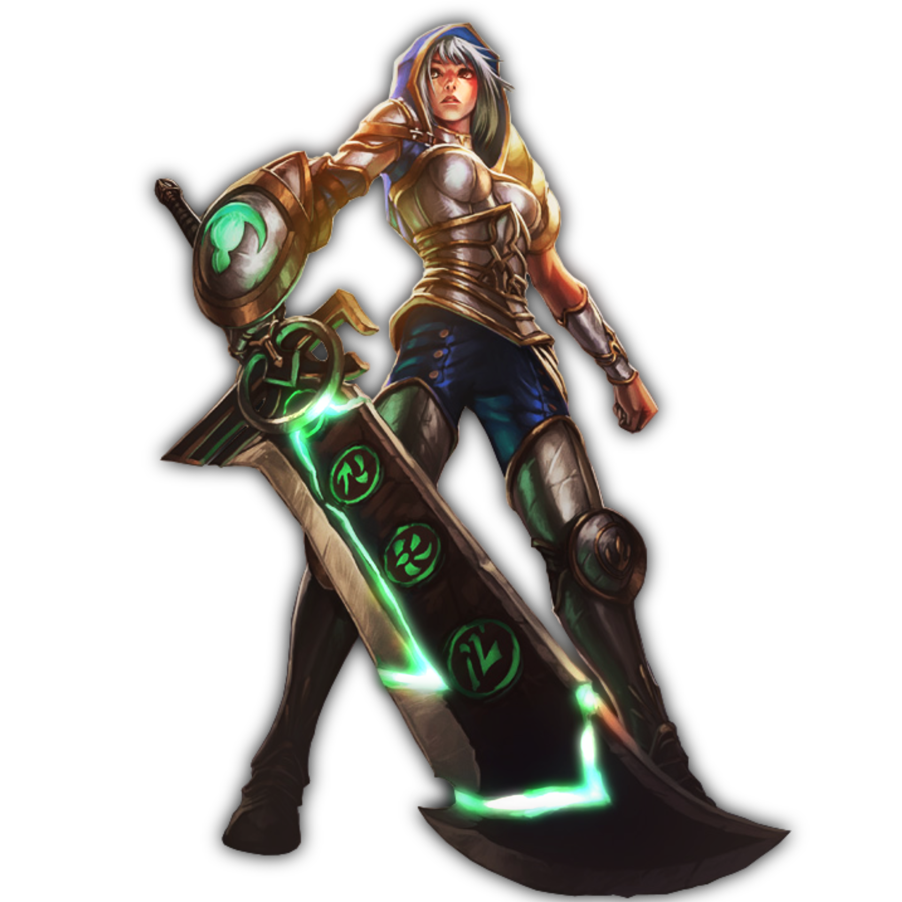

SINOPSE DA HISTÓRIA
Riven, uma exímia espadachim nas tropas de Noxus, alcançou os altos escalões do exército com sua convicção e extrema eficiência, sendo recompensada com uma lâmina rúnica lendária e seu próprio bando de guerra. No entanto, no front ioniano, a confiança de Riven em sua nação foi testada e, no fim, estraçalhada. Ela cortou todos os laços com o império e foi em busca de seu lugar em um mundo devastado, mesmo diante dos rumores de que Noxus havia passado por uma transformação. Agora, acorrentada e forçada a retornar, ela vai enfrentar o julgamento de sua antiga terra natal...